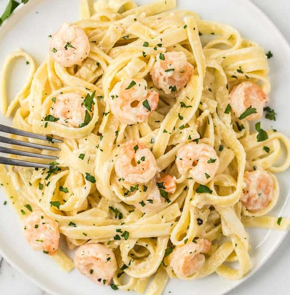

Shrimp Alfredo

The Alfredo of the Sea
Ingredients
- Pasta noodles
- Shrimp
- Garlic Salt
- Soy Sauce
- Butter
- Canned Alfredo Sauce
- Salt and Pepper
- Water
- Cheese
Recipe Instructions
- Peel off the shrimp tails and toss into a hot pan with butter
- Meanwhile, prep a pot with water, the pasta noodles, and then salt the pot
- Add 1 tbsp of Soysauce to the Shrimp and season with garlic salt lower hear and let simmer
- Add alfredo sauce to a hot skillet mix in a slice of cheese and pepper and stir till consistent
- Once all ingredients are prepared mix together and garnish to your optional liking
Go To Homepage